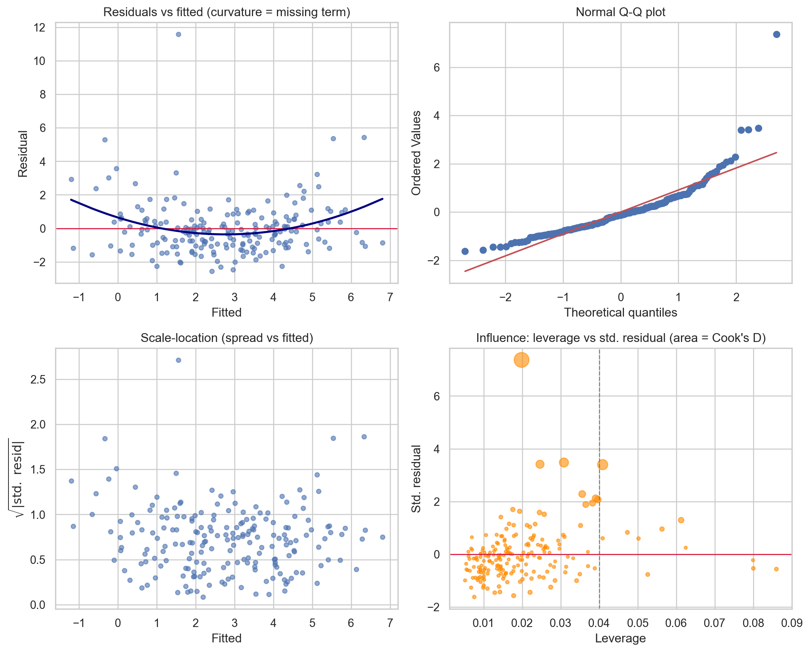

flowchart TD
A[Fit OLS model] --> B[Residuals vs fitted]
B -->|curvature| L[Linearity issue: add terms or transform]
B -->|fan shape| H[Heteroscedasticity suspected]
B -->|clean band| C[Scale-location plot]
H --> C
C -->|trend in spread| HC[Robust SE or WLS or transform]
C -->|flat| D[Normal Q-Q plot]
D -->|S-curve or heavy tails| N[Transform or robust regression]
D -->|on diagonal| E[Residuals vs time / ICC]
E -->|autocorrelation| I[GLS, mixed model, cluster-robust SE]
E -->|independent| F[VIF / condition number]
F -->|high VIF| M[Drop, combine, or penalize]
F -->|low VIF| G[Cook's distance and leverage]
G -->|influential points| P[Investigate, report with and without]
G -->|none| OK[Inference defensible]
86 Linear Regression Assumptions and Diagnostics
Ordinary least squares (OLS) regression remains one of the most widely deployed modeling tools in applied data science, not because it is the most flexible estimator but because it is interpretable, fast, and backed by a precise theory that tells us exactly when it works and when it fails. That theory rests on a set of assumptions. When the assumptions hold, the OLS estimator enjoys optimality properties and its inferential machinery (standard errors, confidence intervals, hypothesis tests) is trustworthy. When they fail, coefficients can remain unbiased while standard errors become misleading, or the coefficients themselves can become biased and inconsistent. The practical craft of regression is therefore not fitting the line but interrogating the residuals afterward. This chapter develops each assumption, the diagnostics that probe it, and the remedies available when a diagnostic flags trouble.
86.1 1. The Model and Its Assumptions
86.1.1 1.1 The linear model
We posit that the conditional mean of a response \(y\) is a linear function of \(p\) predictors. For observation \(i\),
\[ y_i = \beta_0 + \beta_1 x_{i1} + \cdots + \beta_p x_{ip} + \varepsilon_i, \]
or in matrix form \(\mathbf{y} = \mathbf{X}\boldsymbol{\beta} + \boldsymbol{\varepsilon}\), where \(\mathbf{X}\) is the \(n \times (p+1)\) design matrix including a column of ones. The OLS estimator minimizes the residual sum of squares and has the closed form
\[ \hat{\boldsymbol{\beta}} = (\mathbf{X}^\top \mathbf{X})^{-1} \mathbf{X}^\top \mathbf{y}. \]
86.1.2 1.2 The Gauss-Markov conditions
The classical assumptions can be stated compactly. First, the model is correctly specified and linear in parameters, so \(\mathbb{E}[\varepsilon_i \mid \mathbf{X}] = 0\). Second, the errors are uncorrelated across observations, \(\mathrm{Cov}(\varepsilon_i, \varepsilon_j) = 0\) for \(i \neq j\). Third, the errors share a common variance, \(\mathrm{Var}(\varepsilon_i \mid \mathbf{X}) = \sigma^2\), the homoscedasticity condition. Fourth, the design matrix has full column rank, so no predictor is an exact linear combination of the others. Under these four conditions the Gauss-Markov theorem guarantees that OLS is the best linear unbiased estimator (BLUE): among all estimators that are linear in \(\mathbf{y}\) and unbiased, OLS has the smallest variance.
A fifth assumption, normality of the errors \(\varepsilon_i \sim \mathcal{N}(0, \sigma^2)\), is not required for unbiasedness or for the Gauss-Markov result. It is required for the exact small sample validity of \(t\) tests and \(F\) tests. In large samples the central limit theorem rescues inference even when normality fails, provided the other assumptions hold.
It is worth fixing the hierarchy of consequences early. Violations of linearity or the zero conditional mean produce biased, inconsistent coefficients, the most serious failure. Violations of independence or homoscedasticity leave the coefficients unbiased but corrupt the standard errors, so point estimates survive while inference does not. Multicollinearity inflates variance without introducing bias. Keeping this triage in mind helps prioritize which diagnostic warnings demand action.
86.1.3 1.3 Deriving the consequences of each violation
The triage above can be made precise by tracking what happens to the bias and the covariance of \(\hat{\boldsymbol{\beta}}\) as each assumption is relaxed. Start from the algebraic identity that holds whenever \(\mathbf{X}^\top \mathbf{X}\) is invertible,
\[ \hat{\boldsymbol{\beta}} = (\mathbf{X}^\top \mathbf{X})^{-1} \mathbf{X}^\top \mathbf{y} = \boldsymbol{\beta} + (\mathbf{X}^\top \mathbf{X})^{-1} \mathbf{X}^\top \boldsymbol{\varepsilon}. \]
This single line is the engine for every result that follows, because it expresses the estimation error \(\hat{\boldsymbol{\beta}} - \boldsymbol{\beta}\) entirely in terms of the errors \(\boldsymbol{\varepsilon}\).
Zero conditional mean and linearity. Taking the conditional expectation, \(\mathbb{E}[\hat{\boldsymbol{\beta}} \mid \mathbf{X}] = \boldsymbol{\beta} + (\mathbf{X}^\top \mathbf{X})^{-1} \mathbf{X}^\top \mathbb{E}[\boldsymbol{\varepsilon} \mid \mathbf{X}]\). If \(\mathbb{E}[\boldsymbol{\varepsilon} \mid \mathbf{X}] = \mathbf{0}\) the second term vanishes and OLS is unbiased. Suppose instead the true model includes an omitted term \(\mathbf{Z}\boldsymbol{\gamma}\), so \(\mathbb{E}[\boldsymbol{\varepsilon} \mid \mathbf{X}] = \mathbf{Z}\boldsymbol{\gamma}\). Then
\[ \mathbb{E}[\hat{\boldsymbol{\beta}} \mid \mathbf{X}] - \boldsymbol{\beta} = (\mathbf{X}^\top \mathbf{X})^{-1} \mathbf{X}^\top \mathbf{Z}\,\boldsymbol{\gamma}, \]
the omitted variable bias formula. The bias is the product of how strongly the omitted term projects onto the included predictors and its own coefficient. It does not shrink as \(n\) grows, which is why misspecification is inconsistent, not merely inefficient. A missing nonlinear term such as \(x^2\) is exactly this situation with \(\mathbf{Z}\) holding the squared predictor.
Homoscedasticity and independence. Writing \(\mathrm{Var}(\boldsymbol{\varepsilon} \mid \mathbf{X}) = \boldsymbol{\Omega}\), the conditional covariance of the estimator is the sandwich
\[ \mathrm{Var}(\hat{\boldsymbol{\beta}} \mid \mathbf{X}) = (\mathbf{X}^\top \mathbf{X})^{-1} \mathbf{X}^\top \boldsymbol{\Omega}\, \mathbf{X} (\mathbf{X}^\top \mathbf{X})^{-1}. \]
Under the Gauss-Markov conditions \(\boldsymbol{\Omega} = \sigma^2 \mathbf{I}\), the meat \(\mathbf{X}^\top \boldsymbol{\Omega} \mathbf{X}\) collapses to \(\sigma^2 \mathbf{X}^\top \mathbf{X}\), and the sandwich simplifies to the familiar \(\sigma^2 (\mathbf{X}^\top \mathbf{X})^{-1}\). When the errors are heteroscedastic (\(\boldsymbol{\Omega}\) diagonal but non constant) or autocorrelated (\(\boldsymbol{\Omega}\) with nonzero off diagonals), the simplification is illegitimate, yet the point estimate \(\hat{\boldsymbol{\beta}}\) is still unbiased because unbiasedness used only \(\mathbb{E}[\boldsymbol{\varepsilon} \mid \mathbf{X}] = \mathbf{0}\). The damage is confined to the covariance: software that reports \(\hat{\sigma}^2 (\mathbf{X}^\top \mathbf{X})^{-1}\) is estimating the wrong matrix, which is precisely why robust (sandwich) standard errors estimate the meat directly. This derivation also explains why OLS loses BLUE status: the Gauss-Markov proof minimizes variance only when \(\boldsymbol{\Omega} = \sigma^2 \mathbf{I}\), and generalized least squares with the correct \(\boldsymbol{\Omega}^{-1}\) weighting becomes the efficient estimator.
86.2 2. Linearity
86.2.1 2.1 What the assumption means
Linearity refers to linearity in the parameters, not in the raw predictors. A model with \(x^2\) or \(\log x\) terms is still a linear model. The assumption fails when the true conditional mean curves in a way the included terms cannot capture, which is a form of model misspecification. Because the omitted curvature is correlated with the included predictors, the fitted coefficients absorb it and become biased.
86.2.2 2.2 Diagnostics
The primary tool is the plot of residuals against fitted values. Under correct specification this plot should show a structureless horizontal band centered on zero. A systematic curve, a U shape or an inverted U, signals a missing nonlinear term. Plotting residuals against each individual predictor localizes which variable carries the curvature. Component plus residual plots (also called partial residual plots) sharpen this by adding the fitted linear contribution of a predictor back to the residual, making departures from linearity in that one predictor visually obvious.
resid vs fitted: random band -> linearity OK
smile / frown -> missing quadratic term
fan shape -> heteroscedasticity (Section 4)86.2.3 2.3 Remedies
Remedies include adding polynomial terms, applying a transformation such as \(\log\) or square root to the predictor or response, or replacing the linear term with a spline basis that lets the fit bend locally. Regression splines and generalized additive models extend OLS while preserving much of its interpretability. If theory suggests a specific functional form, encode it directly rather than searching blindly, since data driven curve fitting on the same sample used for inference invalidates the reported \(p\) values.
86.3 3. Independence of Errors
86.3.1 3.1 What the assumption means
Independence requires that the error for one observation carries no information about the error for another. It is most often violated in two settings. Time series data exhibit autocorrelation, where consecutive errors are positively correlated because the process has momentum. Clustered or hierarchical data (students within schools, repeated measurements on the same patient) exhibit within cluster correlation. Either way, the effective sample size is smaller than \(n\), so naive standard errors are too small and tests reject too often.
86.3.2 3.2 Diagnostics
For time ordered data, plot residuals against time and inspect for runs of consecutive same sign residuals. The Durbin-Watson statistic formalizes first order autocorrelation,
\[ DW = \frac{\sum_{i=2}^n (e_i - e_{i-1})^2}{\sum_{i=1}^n e_i^2}, \]
which ranges from \(0\) to \(4\). A value near \(2\) indicates no autocorrelation, values toward \(0\) indicate positive autocorrelation, and values toward \(4\) indicate negative autocorrelation. The Breusch-Godfrey test generalizes this to higher order and to models with lagged dependent variables. For clustered data, examine the intraclass correlation, the share of residual variance attributable to between cluster differences.
86.3.3 3.3 Remedies
When errors are autocorrelated, options include modeling the dependence explicitly with autoregressive error structures or generalized least squares, or differencing the series. For clustered data, mixed effects models with random intercepts absorb the within cluster correlation. A pragmatic alternative that leaves the point estimates untouched is to compute cluster robust standard errors, often called clustered or sandwich estimators, which correct the inference without requiring a full model of the dependence.
86.4 4. Homoscedasticity
86.4.1 4.1 What the assumption means
Homoscedasticity is the constant variance condition \(\mathrm{Var}(\varepsilon_i \mid \mathbf{X}) = \sigma^2\). When the spread of errors grows with the fitted value, with a predictor, or with time, the errors are heteroscedastic. The coefficients remain unbiased, but the usual variance formula \(\sigma^2 (\mathbf{X}^\top \mathbf{X})^{-1}\) is wrong, so standard errors, confidence intervals, and tests are invalid. OLS also loses its efficiency claim, since under heteroscedasticity a weighted estimator achieves lower variance.
86.4.2 4.2 Diagnostics
The residuals versus fitted plot reveals heteroscedasticity as a fan or funnel shape where vertical scatter widens or narrows across the range. The scale location plot, which graphs \(\sqrt{|e_i^{\text{std}}|}\) against fitted values, makes the trend in spread easier to read because it removes the sign. Formal tests include the Breusch-Pagan test, which regresses the squared residuals on the predictors and checks whether they explain variation in the squared residuals, and the White test, which adds cross products and squares to detect more general forms. A significant statistic rejects constant variance.
86.4.3 4.3 Remedies
If the variance structure is known up to a scale, weighted least squares with weights \(w_i = 1/\sigma_i^2\) restores efficiency and valid inference. A variance stabilizing transformation of the response, such as \(\log y\) when the spread scales with the mean, often removes the problem and frequently cures mild nonlinearity at the same time. The most common modern remedy is heteroscedasticity consistent standard errors (the Huber-White or HC sandwich estimators, of which HC3 is a robust default for moderate samples). These leave \(\hat{\boldsymbol{\beta}}\) unchanged and replace only the covariance estimate, which is attractive when you trust the mean model but not the variance assumption.
# conceptual: robust covariance leaves coefficients fixed
beta_hat = solve(X'X) X'y # unchanged
cov_robust(HC3) = (X'X)^-1 X' diag(e^2/(1-h)^2) X (X'X)^-186.5 5. Normality of Residuals
86.5.1 5.1 What the assumption means
Normality concerns the distribution of the errors, not the predictors or the response marginally. It matters for exact inference in small samples. With large \(n\) the sampling distribution of \(\hat{\boldsymbol{\beta}}\) approaches normality regardless, so normality of residuals is the least critical of the assumptions for inference, though heavy tails or strong skew often signal a deeper problem such as omitted nonlinearity or influential outliers.
86.5.2 5.2 Diagnostics
The normal quantile quantile (Q-Q) plot orders the standardized residuals and plots them against theoretical normal quantiles. Points falling on the diagonal indicate normality. Departures have characteristic shapes: an S curve indicates skew, while points peeling away at both ends indicate heavy tails. Formal tests include the Shapiro-Wilk test and the Jarque-Bera test, which examines sample skewness and kurtosis. In large samples these tests detect trivial departures that do not threaten inference, so the Q-Q plot usually deserves more weight than the test statistic.
86.5.3 5.3 Remedies
When non normality stems from a skewed response, a transformation such as \(\log y\) or a Box-Cox transformation,
\[ y^{(\lambda)} = \begin{cases} \dfrac{y^\lambda - 1}{\lambda}, & \lambda \neq 0 \\[4pt] \log y, & \lambda = 0, \end{cases} \]
can symmetrize the residuals; the data driven choice of \(\lambda\) maximizes the profile likelihood. When non normality reflects heavy tails or outliers, robust regression methods such as Huber or Tukey M estimators downweight extreme observations. If the response is a count or a binary outcome, the linear model is the wrong family entirely and a generalized linear model is the principled fix.
86.6 6. Multicollinearity
86.6.1 6.1 What the assumption means
Multicollinearity arises when predictors are strongly linearly related to one another. Perfect collinearity makes \(\mathbf{X}^\top \mathbf{X}\) singular and the OLS solution undefined. Near collinearity makes it nearly singular, so its inverse has large entries and the coefficient variances explode. The model can still predict well on data resembling the training set, but individual coefficients become unstable: their signs can flip with small changes to the data, and their standard errors balloon, making it hard to attribute effects to specific predictors.
86.6.2 6.2 The variance inflation factor
The standard diagnostic is the variance inflation factor. For predictor \(j\), regress \(x_j\) on all other predictors and record the resulting \(R_j^2\). Then
\[ \mathrm{VIF}_j = \frac{1}{1 - R_j^2}. \]
The VIF measures how much the variance of \(\hat{\beta}_j\) is inflated relative to a hypothetical scenario in which \(x_j\) were orthogonal to the other predictors. To see where the formula comes from, write the variance of a single coefficient explicitly. For predictor \(j\) with sample variance \(s_j^2\) across \(n\) observations,
\[ \mathrm{Var}(\hat{\beta}_j) = \frac{\sigma^2}{(n-1)\, s_j^2}\cdot\frac{1}{1 - R_j^2}, \]
where \(R_j^2\) is the coefficient of determination from regressing \(x_j\) on the remaining predictors. The first factor is the variance one would obtain if \(x_j\) were orthogonal to the others; the second factor, \(1/(1 - R_j^2) = \mathrm{VIF}_j\), is the exact multiplicative penalty collinearity imposes. As \(R_j^2 \to 1\) the denominator collapses and the variance diverges, which is the analytic statement of why near collinear predictors have unstable coefficients.
A VIF of \(1\) means no collinearity. Common rules of thumb flag \(\mathrm{VIF} > 5\) as moderate and \(\mathrm{VIF} > 10\) as serious, though these thresholds are conventions rather than laws. The square root of the VIF tells you the factor by which the standard error is enlarged. A complementary diagnostic is the condition number of the scaled design matrix, the ratio of its largest to smallest singular value, where values above about \(30\) suggest collinearity worth investigating.
VIF_j = 1 / (1 - R2_j) R2_j from regressing x_j on the other predictors
VIF = 1 no collinearity
VIF > 5 moderate, investigate
VIF > 10 serious, consider remedy86.6.3 6.3 Remedies
The first response is to recognize that multicollinearity does not bias coefficients and does not harm prediction, so if the goal is forecasting you may do nothing. When interpretation matters, options include dropping one of a pair of redundant predictors, combining correlated predictors into a composite or a principal component, or centering predictors when the collinearity is induced by interaction or polynomial terms. Penalized methods such as ridge regression deliberately accept a small bias in exchange for a large reduction in variance, stabilizing the coefficients of collinear predictors and often improving out of sample accuracy.
86.7 7. Residual and Leverage Analysis
86.7.1 7.1 Leverage and the hat matrix
Not every observation influences the fit equally. The hat matrix \(\mathbf{H} = \mathbf{X}(\mathbf{X}^\top \mathbf{X})^{-1}\mathbf{X}^\top\) maps observed responses to fitted values, \(\hat{\mathbf{y}} = \mathbf{H}\mathbf{y}\). Its diagonal entries \(h_{ii}\) are the leverages, measuring how far observation \(i\) sits from the center of the predictor space. Leverage depends only on \(\mathbf{X}\), not on \(y\). Leverages satisfy \(\sum_i h_{ii} = p + 1\), so the average leverage is \((p+1)/n\), and a common rule flags points with \(h_{ii} > 2(p+1)/n\) as high leverage. High leverage is not by itself a problem; it becomes one only when the high leverage point also has a large residual.
86.7.2 7.2 Standardized and studentized residuals
Raw residuals have unequal variances because \(\mathrm{Var}(e_i) = \sigma^2 (1 - h_{ii})\), so high leverage points have artificially small residuals. To compare residuals fairly we standardize. The studentized residual divides by an estimate of its own standard deviation,
\[ t_i = \frac{e_i}{\hat{\sigma}_{(i)}\sqrt{1 - h_{ii}}}, \]
where \(\hat{\sigma}_{(i)}\) is computed with observation \(i\) deleted (the externally studentized form). Externally studentized residuals follow a \(t\) distribution under the model, so values beyond roughly \(\pm 3\) mark outliers in the response direction.
86.7.3 7.3 Influence: Cook’s distance and DFFITS
An influential point is one whose removal would substantially change the fit. Cook’s distance combines residual size and leverage into a single measure of how much all fitted values shift when observation \(i\) is deleted,
\[ D_i = \frac{e_i^2}{(p+1)\hat{\sigma}^2} \cdot \frac{h_{ii}}{(1 - h_{ii})^2}. \]
A common screening threshold is \(D_i > 4/n\), with \(D_i > 1\) indicating a clearly influential point. The structure of the formula is itself instructive. The first factor scales the squared residual by the model variance, and the second factor, \(h_{ii}/(1 - h_{ii})^2\), grows without bound as \(h_{ii} \to 1\). Cook’s distance is therefore a product of a residual term and a leverage term: an observation needs both an unusual response and an unusual predictor location to be influential. A point with a large residual but average leverage moves the fit little, and a high leverage point that happens to lie on the regression surface (small residual) also moves it little. The related DFFITS measures the change in the fitted value for observation \(i\) when that observation is dropped, and DFBETAS measures the change in each coefficient. The influence plot, which graphs studentized residuals against leverage with point areas proportional to Cook’s distance, summarizes all three concepts at once: the dangerous points sit in the upper right and lower right corners, combining high leverage with a large residual.
86.7.4 7.4 A worked example
A small hand calculation fixes the leverage and influence ideas. Take five observations with predictor values \(x = (1, 2, 3, 4, 10)\) and a single intercept, so \(p+1 = 2\). The leverage of point \(i\) for simple regression is
\[ h_{ii} = \frac{1}{n} + \frac{(x_i - \bar{x})^2}{\sum_k (x_k - \bar{x})^2}. \]
Here \(\bar{x} = 4\) and \(\sum_k (x_k - \bar{x})^2 = 9 + 4 + 1 + 0 + 36 = 50\). The fifth point sits far from the center, so its leverage is \(h_{55} = \tfrac{1}{5} + \tfrac{36}{50} = 0.20 + 0.72 = 0.92\), while the central point \(x_4 = 4\) has \(h_{44} = \tfrac{1}{5} + 0 = 0.20\). The average leverage is \((p+1)/n = 2/5 = 0.40\), and the high leverage rule \(h_{ii} > 2(p+1)/n = 0.80\) flags only the fifth observation, matching the intuition that \(x = 10\) is the outlier in predictor space. The leverages sum to \(0.92 + \cdots = p+1 = 2\), a useful arithmetic check. Whether that point is actually influential then depends on its residual through Cook’s distance: a fifth response that lands on the line extrapolated from the first four leaves \(D_5\) small, while a deviating fifth response makes \(D_5\) large because the \(h_{55}/(1 - h_{55})^2 = 0.92/0.0064 \approx 144\) factor amplifies even a modest residual. The Python section below reproduces these numbers and the full diagnostic suite on a larger simulated dataset.
86.7.5 7.4 Acting on influential points
A flagged point is an invitation to investigate, not a license to delete. Check first for data entry errors, which justify correction or removal. If the point is genuine, it may be the most informative observation in the sample, revealing that the model is wrong in a region of predictor space rather than that the observation is faulty. Report results with and without influential points when their inclusion changes conclusions, and prefer robust regression over silent deletion when several points exert influence.
86.8 8. A Diagnostic Workflow
The assumptions are best checked in a fixed order, because failures cascade. Begin with the residuals versus fitted plot, which simultaneously probes linearity (look for curvature) and homoscedasticity (look for a fan). Next inspect the scale location plot to confirm or refine the variance judgment. Then turn to the Q-Q plot for normality. For ordered or grouped data, plot residuals against time or examine within cluster correlation for independence. Compute VIFs once the mean model is settled. Finally, screen for influence with Cook’s distance and the leverage plot, since a single influential point can manufacture the appearance of nonlinearity or heteroscedasticity that vanishes once the point is addressed.
Throughout, remember the triage from Section 1. A curved residual plot is more urgent than a slightly non normal Q-Q plot, because the former biases coefficients while the latter, in a reasonable sample, barely touches inference. Diagnostics are not a checklist to be passed but a conversation with the data about whether the model you wrote down is the model the data support. The reward for that conversation is inference you can defend and predictions you can trust.
86.9 9. Diagnostics in Code
The diagnostics above are best learned by running them. The following sections build a deliberately flawed dataset (a missing quadratic term, heteroscedastic errors, two correlated predictors, and one influential point) and exercise the full suite. We lead with the open source statsmodels library, the mature reference implementation for regression diagnostics in Python, and complement it with scikit-learn, scipy, and sympy.
Code
import numpy as np
import pandas as pd
import matplotlib.pyplot as plt
import seaborn as sns
import statsmodels.api as sm
from statsmodels.stats.outliers_influence import (
variance_inflation_factor, OLSInfluence)
from statsmodels.stats.diagnostic import het_breuschpagan
from scipy import stats
import sympy as sp
rng = np.random.default_rng(0)
sns.set_theme(style="whitegrid")
# --- Build a flawed dataset on purpose -----------------------------------
n = 200
x1 = rng.normal(0, 1, n)
x2 = 0.9 * x1 + rng.normal(0, 0.4, n) # correlated with x1 -> collinearity
x3 = rng.normal(0, 1, n)
# true mean is quadratic in x1; we will (wrongly) fit it linearly
mu = 2.0 + 1.5 * x1 + 0.8 * x1**2 - 1.0 * x3
sigma = 0.5 + 0.6 * np.abs(x1) # heteroscedastic: spread grows with |x1|
y = mu + rng.normal(0, sigma)
y[150] += 12.0 # one influential outlier
df = pd.DataFrame({"x1": x1, "x2": x2, "x3": x3, "y": y})
X = sm.add_constant(df[["x1", "x2", "x3"]])
model = sm.OLS(df["y"], X).fit()
print(model.summary().tables[1])
infl = OLSInfluence(model)
fitted = model.fittedvalues
resid = model.resid
std_resid = infl.resid_studentized_internal
leverage = infl.hat_matrix_diag
cooks = infl.cooks_distance[0]
# --- VIF table (statsmodels) ---------------------------------------------
Xv = X.values
vif = pd.DataFrame({
"predictor": X.columns,
"VIF": [variance_inflation_factor(Xv, i) for i in range(Xv.shape[1])],
})
print("\nVariance inflation factors")
print(vif.to_string(index=False))
# --- Breusch-Pagan test for heteroscedasticity ---------------------------
bp_lm, bp_pval, bp_f, bp_fp = het_breuschpagan(resid, X)
print(f"\nBreusch-Pagan LM = {bp_lm:.3f}, p = {bp_pval:.4g}")
# --- Influence summary table ---------------------------------------------
n_obs, p1 = X.shape
lev_thresh = 2 * p1 / n_obs
flagged = pd.DataFrame({
"obs": np.arange(n_obs),
"std_resid": std_resid,
"leverage": leverage,
"cooks_D": cooks,
}).sort_values("cooks_D", ascending=False).head(5).reset_index(drop=True)
print(f"\nTop influence (leverage threshold 2(p+1)/n = {lev_thresh:.3f}, "
f"Cook's D screen 4/n = {4/n_obs:.3f})")
print(flagged.to_string(index=False))
# --- SymPy check: leverages sum to p+1 (trace of hat matrix) -------------
h_sym = sp.symbols("h0:%d" % n_obs)
trace_expr = sp.Add(*h_sym)
trace_val = float(trace_expr.subs(dict(zip(h_sym, leverage))))
print(f"\nSymbolic check sum(h_ii) = {trace_val:.6f} "
f"vs p+1 = {p1} (match: {np.isclose(trace_val, p1)})")
# --- Four-panel diagnostic figure ----------------------------------------
fig, ax = plt.subplots(2, 2, figsize=(11, 9))
ax[0, 0].scatter(fitted, resid, s=18, alpha=0.6)
ax[0, 0].axhline(0, color="crimson", lw=1)
lo = np.poly1d(np.polyfit(fitted, resid, 2))(np.sort(fitted))
ax[0, 0].plot(np.sort(fitted), lo, color="navy", lw=2)
ax[0, 0].set(title="Residuals vs fitted (curvature = missing term)",
xlabel="Fitted", ylabel="Residual")
stats.probplot(std_resid, dist="norm", plot=ax[0, 1])
ax[0, 1].set_title("Normal Q-Q plot")
ax[1, 0].scatter(fitted, np.sqrt(np.abs(std_resid)), s=18, alpha=0.6)
ax[1, 0].set(title="Scale-location (spread vs fitted)",
xlabel="Fitted", ylabel=r"$\sqrt{|\mathrm{std.\ resid}|}$")
ax[1, 1].scatter(leverage, std_resid, s=200 * cooks / cooks.max() + 8,
alpha=0.6, color="darkorange")
ax[1, 1].axvline(lev_thresh, color="gray", ls="--", lw=1)
ax[1, 1].axhline(0, color="crimson", lw=1)
ax[1, 1].set(title="Influence: leverage vs std. residual (area = Cook's D)",
xlabel="Leverage", ylabel="Std. residual")
fig.tight_layout()
plt.show()==============================================================================
coef std err t P>|t| [0.025 0.975]
------------------------------------------------------------------------------
const 2.7548 0.113 24.423 0.000 2.532 2.977
x1 1.4734 0.267 5.526 0.000 0.948 1.999
x2 -0.0461 0.275 -0.167 0.867 -0.589 0.496
x3 -1.0146 0.113 -8.993 0.000 -1.237 -0.792
==============================================================================
Variance inflation factors
predictor VIF
const 1.007645
x1 5.201453
x2 5.216724
x3 1.007433
Breusch-Pagan LM = 3.024, p = 0.3879
Top influence (leverage threshold 2(p+1)/n = 0.040, Cook's D screen 4/n = 0.020)
obs std_resid leverage cooks_D
150 7.367594 0.019834 0.274606
159 3.398492 0.040888 0.123093
62 3.477935 0.030833 0.096207
164 3.413255 0.024621 0.073520
69 2.283138 0.035573 0.048068
Symbolic check sum(h_ii) = 4.000000 vs p+1 = 4 (match: True)
The residuals versus fitted panel bends, exposing the omitted quadratic term; the scale location panel rises, confirming the engineered heteroscedasticity; the VIF table shows the inflation on x1 and x2; and the influence panel isolates observation 150 in the upper region. The SymPy line verifies the identity \(\sum_i h_{ii} = p + 1\) numerically.
using GLM, DataFrames, Random, Statistics, Distributions
Random.seed!(0)
n = 200
x1 = randn(n)
x2 = 0.9 .* x1 .+ 0.4 .* randn(n)
x3 = randn(n)
sigma = 0.5 .+ 0.6 .* abs.(x1)
y = 2.0 .+ 1.5 .* x1 .+ 0.8 .* x1.^2 .- 1.0 .* x3 .+ sigma .* randn(n)
y[150] += 12.0
df = DataFrame(x1=x1, x2=x2, x3=x3, y=y)
model = lm(@formula(y ~ x1 + x2 + x3), df)
println(coeftable(model))
# Variance inflation factor for x1 by regressing it on the others
aux = lm(@formula(x1 ~ x2 + x3), df)
vif_x1 = 1 / (1 - r2(aux))
println("VIF(x1) = ", round(vif_x1, digits=3))
# Leverage via the hat matrix diagonal
X = hcat(ones(n), x1, x2, x3)
H = X * inv(X' * X) * X'
lev = diag(H)
println("sum(h_ii) = ", round(sum(lev), digits=4), " (p+1 = ", size(X, 2), ")")// Minimal OLS via the normal equations using nalgebra.
// Cargo.toml: nalgebra = "0.33", rand = "0.8", rand_distr = "0.4"
use nalgebra::{DMatrix, DVector};
use rand::SeedableRng;
use rand::rngs::StdRng;
use rand_distr::{Distribution, Normal};
fn main() {
let mut rng = StdRng::seed_from_u64(0);
let normal = Normal::new(0.0, 1.0).unwrap();
let n = 200usize;
let mut data = Vec::with_capacity(n * 4); // [1, x1, x2, x3]
let mut y = Vec::with_capacity(n);
for _ in 0..n {
let x1 = normal.sample(&mut rng);
let x2 = 0.9 * x1 + 0.4 * normal.sample(&mut rng);
let x3 = normal.sample(&mut rng);
let sigma = 0.5 + 0.6 * x1.abs();
let yi = 2.0 + 1.5 * x1 + 0.8 * x1 * x1 - 1.0 * x3
+ sigma * normal.sample(&mut rng);
data.extend_from_slice(&[1.0, x1, x2, x3]);
y.push(yi);
}
let x = DMatrix::from_row_slice(n, 4, &data);
let yv = DVector::from_vec(y);
// beta_hat = (X'X)^-1 X'y
let xtx = x.tr_mul(&x);
let xty = x.tr_mul(&yv);
let beta = xtx.try_inverse().expect("singular") * xty;
println!("OLS coefficients: {}", beta.transpose());
// Leverage diagonal trace should equal p+1 = 4
let h = &x * xtx.try_inverse().unwrap() * x.transpose();
let trace: f64 = (0..n).map(|i| h[(i, i)]).sum();
println!("sum(h_ii) = {:.4} (p+1 = 4)", trace);
}86.10 References
- Fox, J. (2016). Applied Regression Analysis and Generalized Linear Models, 3rd ed. Sage. https://us.sagepub.com/en-us/nam/applied-regression-analysis-and-generalized-linear-models/book237254
- Belsley, D. A., Kuh, E., and Welsch, R. E. (1980). Regression Diagnostics: Identifying Influential Data and Sources of Collinearity. Wiley. https://onlinelibrary.wiley.com/doi/book/10.1002/0471725153
- Cook, R. D. (1977). Detection of Influential Observation in Linear Regression. Technometrics, 19(1), 15-18. https://www.jstor.org/stable/1268249
- Breusch, T. S., and Pagan, A. R. (1979). A Simple Test for Heteroscedasticity and Random Coefficient Variation. Econometrica, 47(5), 1287-1294. https://www.jstor.org/stable/1911963
- White, H. (1980). A Heteroskedasticity Consistent Covariance Matrix Estimator and a Direct Test for Heteroskedasticity. Econometrica, 48(4), 817-838. https://www.jstor.org/stable/1912934
- Durbin, J., and Watson, G. S. (1951). Testing for Serial Correlation in Least Squares Regression II. Biometrika, 38(1/2), 159-177. https://www.jstor.org/stable/2332325
- James, G., Witten, D., Hastie, T., and Tibshirani, R. (2021). An Introduction to Statistical Learning, 2nd ed. Springer. https://www.statlearning.com
- Box, G. E. P., and Cox, D. R. (1964). An Analysis of Transformations. Journal of the Royal Statistical Society, Series B, 26(2), 211-252. https://www.jstor.org/stable/2984418
- Long, J. S., and Ervin, L. H. (2000). Using Heteroscedasticity Consistent Standard Errors in the Linear Regression Model. The American Statistician, 54(3), 217-224. https://doi.org/10.1080/00031305.2000.10474549
- Cook, R. D. (1977). Detection of Influential Observation in Linear Regression. Technometrics, 19(1), 15-18. https://doi.org/10.1080/00401706.1977.10489493
- Breusch, T. S., and Pagan, A. R. (1979). A Simple Test for Heteroscedasticity and Random Coefficient Variation. Econometrica, 47(5), 1287-1294. https://doi.org/10.2307/1911963
- White, H. (1980). A Heteroskedasticity Consistent Covariance Matrix Estimator and a Direct Test for Heteroskedasticity. Econometrica, 48(4), 817-838. https://doi.org/10.2307/1912934
- Box, G. E. P., and Cox, D. R. (1964). An Analysis of Transformations. Journal of the Royal Statistical Society, Series B, 26(2), 211-252. https://doi.org/10.1111/j.2517-6161.1964.tb00553.x
- Seabold, S., and Perktold, J. (2010). statsmodels: Econometric and Statistical Modeling with Python. Proceedings of the 9th Python in Science Conference, 92-96. https://doi.org/10.25080/Majora-92bf1922-011
- Pedregosa, F., et al. (2011). Scikit-learn: Machine Learning in Python. Journal of Machine Learning Research, 12, 2825-2830. https://www.jmlr.org/papers/v12/pedregosa11a.html